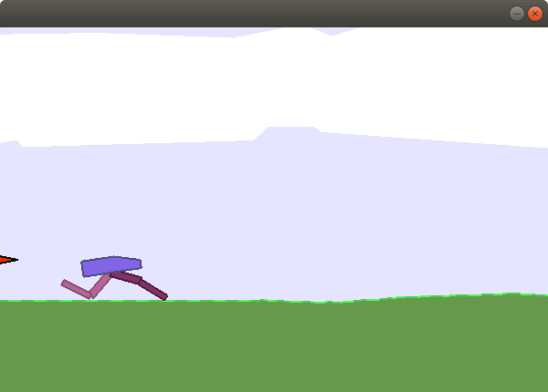

Teaching A Robot To Walk
Imports
We need to import openai-gym (as gym).
# from pypi
import gym
Setting Up the Environment
You build the environment with gym.make. In this case we're going to use the BipedalWalker-v2, which the documentation describes like this:
Reward is given for moving forward, total 300+ points up to the far end. If the robot falls, it gets -100. Applying motor torque costs a small amount of points, more optimal agent will get better score. State consists of hull angle speed, angular velocity, horizontal speed, vertical speed, position of joints and joints angular speed, legs contact with ground, and 10 lidar rangefinder measurements. There's no coordinates in the state vector.
environment = gym.make("BipedalWalker-v2")
Running It
We're going to run this for 10 episodes (each run from start to finish is an episode), resetting the environment for each episode. Then within an episode we're going to have the environment run up to 1,000 steps (a time-step that updates the environment). If it falls down or walks off screen the environment will indicate that it's done.
EPISODES = range(10)
STEPS = 10**3 + 1
for episode in EPISODES:
observation = environment.reset()
for step in range(STEPS):
environment.render()
action = environment.action_space.sample()
observation, reward, done, info = environment.step(action)
if done:
print("It took {} steps to finish this episode.".format(step))
break
It only finished five out of the ten times, probably by falling down each time. Note that I didn't implement any logic to teach the robot to walk, this is all run with built-in functionality.
When you run it it will open a window so you can see what's happening.
